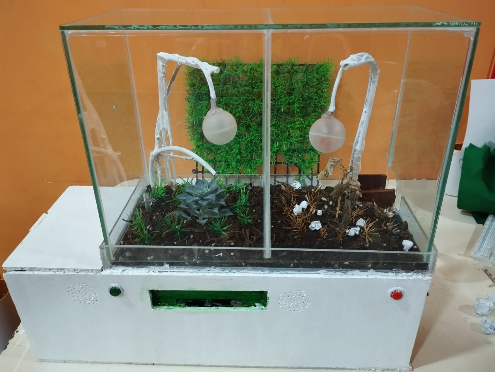

Galería



“Un pequeño cambio en tus decisiones puede transformar tu mundo y el planeta”.
El Vive Box es una cápsula dividida en dos caminos (positivo y negativo) que responde a las decisiones de los estudiantes con luces, efectos y mensajes de voz. Según la elección, se activa un sistema de riego o se expulsa basura simbólica. Al finalizar, se entrega una lámina biodegradable con semillas para sembrar.
La educación emocional es el aprendizaje que nos permite reconocer, comprender y manejar nuestras emociones y las de los demás. Desarrollar esta habilidad nos ayuda a tomar mejores decisiones, resolver conflictos pacíficamente y fortalecer nuestras relaciones.
En ViveBox, la educación emocional se trabaja mediante preguntas y desafíos interactivos que invitan a reflexionar sobre nuestras acciones, identificar cómo nos sentimos y practicar la empatía. Las decisiones tomadas dentro del juego impactan un entorno simbólico, ayudando a comprender cómo nuestras actitudes afectan a las personas en la vida real.
El cuidado ambiental consiste en tomar acciones responsables para proteger y conservar el medio ambiente. Esto incluye reducir la contaminación, aprovechar mejor los recursos y promover hábitos que aseguren un planeta saludable.
En ViveBox, las decisiones de los estudiantes influyen directamente en el estado de las plantas y el ambiente dentro de la cápsula. Además, fomentamos el reciclaje creativo: los participantes aportan residuos de papel para transformarlos en láminas biodegradables con semillas que podrán sembrar en casa.
¡Sé parte de la experiencia ViveBox! ♻️ Trae residuos de papel y cartón limpios como hojas usadas, servilletas, papel periódico, cajas de huevo o cartón delgado.
Con tu aporte, fabricaremos láminas biodegradables con semillas 🌿 que podrás plantar y ver crecer. Así reducimos residuos, damos nueva vida al papel y cuidamos el planeta. 🌍💚
Si no cuentas con mucho papel, también puedes traer hojas de cuadernos viejos o recortes escolares que normalmente se desecharían. Nosotros los transformaremos en vida.
El ViveBox es creado por un grupo de estudiantes apasionadas por la innovación, la educación emocional y el cuidado del planeta. Formamos parte de la I.E. N°81902 y buscamos unir tecnología, aprendizaje divertido y sostenibilidad.
Docente asesora: Carmen del Rosario Carrascal Cerna
“Juntas demostramos que las ideas creativas pueden generar grandes cambios.” 💡🌱💪
Cuida tu planta y observa cómo tu decisión positiva sigue dando frutos.
👉 Esto mantiene la humedad sin que se formen hongos.
⏳ En 2 a 3 días deberías observar una pequeña raíz. ¡Ese es el momento de trasplantar!
👉 Evita usar agua directa del caño porque puede dañar la semilla.
Sube una foto semanal de tu planta y cuéntanos lo que aprendiste.
Mosaico de fotos de plantas de diferentes participantes. Haz clic en una imagen para verla en grande.
Láminas sembradas: 0
Objetivo: sembrar 100 láminas = 100 nuevas plantas dando oxígeno al planeta